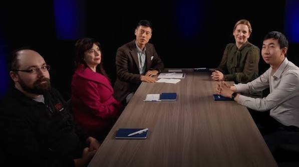
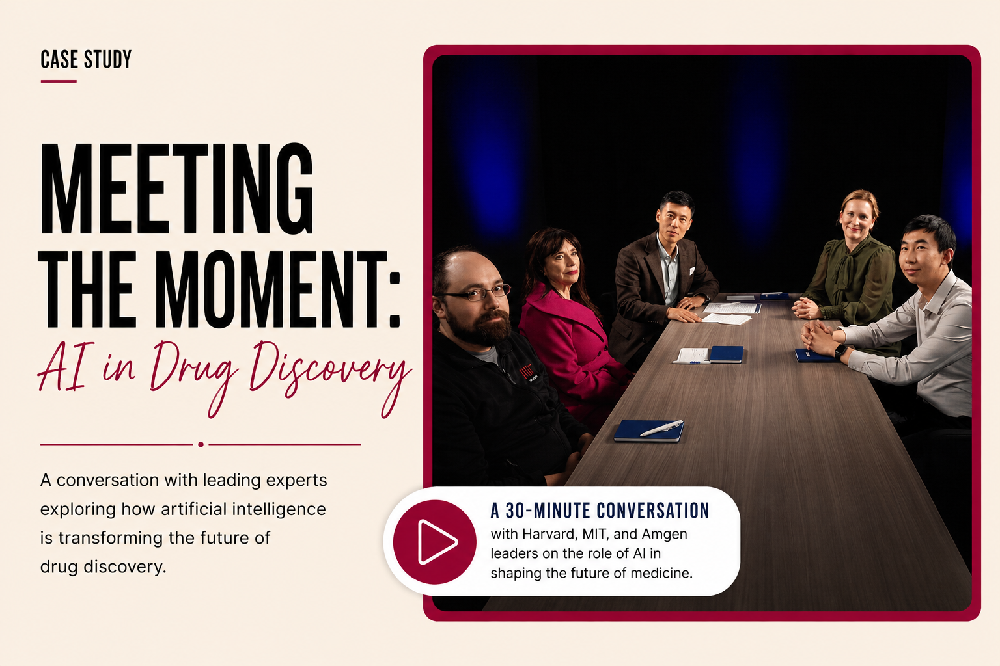
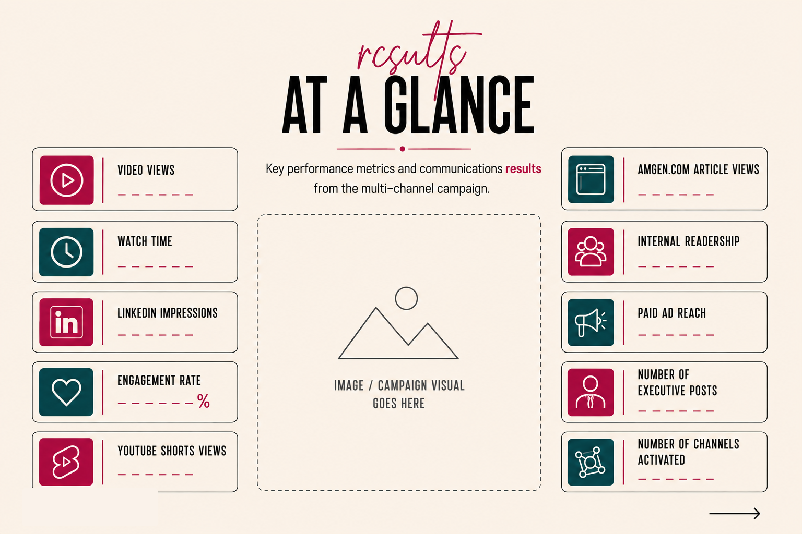

Social Video
AI in Drug Discovery: Full Episode
Short-form video asset designed to introduce the story quickly, drive engagement, and extend the campaign across social channels.
Watch on YouTube
Project Overview
Meeting the Moment was a flagship 30-minute, podcast-style video conversation hosted on Amgen's YouTube channel, designed to showcase how artificial intelligence is transforming drug discovery and accelerating scientific innovation. The discussion brought together thought leaders from Amgen, Harvard Medical School, and the Massachusetts Institute of Technology (MIT) to explore AI's role in advancing biomedical research and shaping the future of medicine.
The YouTube conversation served as the foundation for a broader multimedia storytelling initiative, with content strategically repurposed and amplified across digital, social, and internal communications channels. The campaign also included a paid thought leadership advertising strategy to extend the conversation beyond Amgen's owned channels, increase visibility among priority audiences, and reinforce the company's leadership in AI-enabled drug discovery.
Strategy
To help amplify the conversation, a multi-channel communications strategy was developed to extend the reach and impact of the 30-minute video beyond Amgen's YouTube channel. Rather than treating it as a one-time release, the strategy repurposed the content into platform-specific assets across Amgen's enterprise social channels including LinkedIn and YouTube Shorts, Amgen.com, the company's internal global news channel, and LinkedIn thought leadership posts from Amgen senior leaders and the Harvard and MIT panelists. The campaign also included a paid thought leadership ad to extend reach among priority external audiences.
As Project Manager, responsibilities included leading the editorial strategy, coordinating communications, digital, creative, production, and executive stakeholders, managing timelines and approvals, and ensuring each channel supported a consistent story while tailoring content for its audience and platform. The integrated campaign transformed a single 30-minute conversation into a sustained, enterprise-wide storytelling initiative that expanded audience reach, elevated executive thought leadership, and reinforced Amgen's leadership in AI-enabled drug discovery.
The project also served as a pilot for future multimedia storytelling initiatives, demonstrating how long-form video, executive thought leadership, and digital-first content can strengthen corporate reputation, increase awareness of scientific innovation, and inspire broader conversations about the future of AI in healthcare.
Campaign Assets

Short-form video asset designed to introduce the story quickly, drive engagement, and extend the campaign across social channels.
Watch on YouTubePublic-facing editorial content that expanded the core video story and helped audiences understand why AI matters for biomedical research.
Read ArticlePlaceholder for a LinkedIn or social post that extended the story through executive thought leadership and digital-first packaging.
View LinkedIn ChannelCompany-channel LinkedIn content designed to expand reach, reinforce the enterprise science narrative, and connect the story to broader innovation priorities.
View LinkedIn PostResults
The campaign demonstrated how a single long-form conversation could become a scalable, enterprise-wide storytelling initiative. By combining executive thought leadership with an integrated multi-channel distribution strategy, the project made AI-enabled drug discovery more accessible to internal and external audiences while reinforcing Amgen's position as a leader in scientific innovation.
Beyond the campaign's performance, the project created a repeatable framework for future multimedia storytelling by connecting long-form video, digital-first content, executive visibility, and strategic amplification into a single communications model. The campaign was also well received by internal stakeholders, including senior leaders, reinforcing the value of the approach and helping establish a foundation for future multimedia storytelling initiatives.
